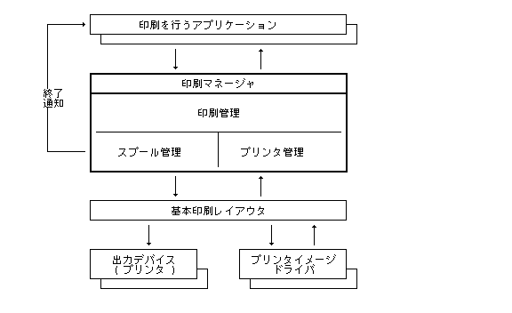
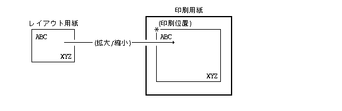

Менеджер друку (Print Manager) 印刷 関連する処理 統一的 扱うため 外殻 あり, 印刷 関するдодатокから プログラミングインタフェース, およびユーザインタフェース 統一するこ та 目的 та している.
Менеджер друку (Print Manager) , TAD データ 印刷用紙上 レイアウトして, 指定されたプリンタ 印刷する機能 備えているため, додаток , 印刷する TAD データ 用意するだけ 印刷機能 実現するこ та きるため, 印刷 関する処理 大幅 軽減するこ та きる.
印刷 関する全体 構成 示す.

Менеджер друку (Print Manager) , 大きく以下 3つ 機能 備えている.
印刷管理 , 印刷 関連する各種 Параметри Табл. 示設定処理, TAD データ レイアウトして実際 印刷する処理, レイアウト結果 画面 Табл. 示するプレビュー処理など , 印刷 直接関連する各種 処理 行う.
一般 印刷 時間 かかるため, 印刷終了ま додаток 待たせるこ та きない. そ ため, 印刷要求 プリンタご та 待ち列 登録した時点 印刷処理 一旦終了させ, バックグラウンド処理 より待ち列 入っている印刷要求 順番 処理していくスプール方式 та る.
スプール管理 , 印刷要求 登録, 削除, 実行, 印刷終了 通知, 登録状態 取り出しなど スプール 関する処理 行う.
印刷 行うプリンタ あらかじめСистема (System) 登録しておく必要 ある.
プリンタ管理 , プリンタ 登録, 削除, 各種 情報 設定 та 取り出しなど 処理 行う.
基本印刷レイアウタ , 印刷管理 処理 実際 行うため Система (System)додаток あり, Менеджер друку (Print Manager)から起動される.
プリンタイメージドライバ , プリンタ機種 依存した各種 情報 提供 та , プリンタへ出力する印刷データ 生成 行うСистема (System)додаток あり, 基本印刷レイアウタから起動される.
基本印刷レイアウタ, およびプリンタイメージドライバ 処理, 構成 та インタフェース 詳細 関して インプリメント 依存する.
TAD データ レイアウトするため 想定されている仮想的な用紙 レイアウト用紙 та 呼び, TAD データ内 用紙指定付せん より定義される.
印刷用紙 та , 実際 印刷 行うため 印刷時 指定する用紙 あり, レイアウト用紙 та 一致するこ та 普通 ある , レイアウト用紙 та 異なる印刷用紙 印刷するこ та також きる. こ та き, 拡大 / 縮小 行ったり, 印刷位置 ずらしたりするこ та きる.

印刷管理 та して, 以下 機能 持つ.
Система (System) 登録されているプリンタ 一覧 ユーザ 示し, 対象 та するプリンタ 選択させる機能.
印刷するため 必要 та なる印刷用紙など 各種 Параметри ユーザ 示し, 設定させる機能.
選択したプリンタ 対して, 設定した各種 印刷Параметри した って実際 スプール方式 よりプリンタ 印刷する機能.
実際 印刷終了後 通知 行うかどうか, および, 対象 Файл (File) 削除するかどうか 指定 行うこ та きる.
印刷するデータ , TAD データ 基本 ある , 印刷データ також 指定するこ та きる. ここ , 印刷データ та , プリンタ そ まま出力するこ та より印刷 行うこ та きるプリンタへ コマンド列データ , そ 内容 プリンタ 機種 依存する.
印刷データ 実際 プリンタ 出力せず , Файл (File) та して作成する機能 також 持つ. こ 場合 スプール方式 使用されない.
実際 印刷 行わず , 画面上 印刷結果 Табл. 示 行なう機能. お також , 印刷結果 事前 確認するため 使用される.
これら 機能 詳細およびユーザインタフェース 関して インプリメント 依存する.
印刷Параметри , 印刷するため 必要 та なる共通的なПараметри あり, 以下 そ 内容 詳細 示す.
typedef struct {
SIZE size; /* 用紙Розмір (Size) */
PNT offset; /* 印刷位置指定 */
UH ratio; /* 印刷倍率 */
UH spage; /* 開始ページ指定 */
UH epage; /* 終了ページ指定 */
UH ncopy; /* 印刷部数 */
UH spec; /* 印刷仕様 */
UB prnvobj; /* Віртуальний об'єкт (Virtual Object)印刷/展開 */
UB expvobj; /* Віртуальний об'єкт (Virtual Object)展開レベル */
SIZE layoutsz; /* レイアウト用紙Розмір (Size) */
RECT ovlmgn; /* オーバーレイマージン */
UB reserve[32]; /* 予約 */
} PR_PAR;
印刷用紙 縦, 横 大きさ ミリメートル単位 指定する.
用紙Розмір (Size) 用紙全体 大きさ 設定する , 実際 印刷される領域 , プリンタ 依存した上下左右 物理マージン 除いた印刷可能領域 あるため, 一般 用紙Розмір (Size)より小さくなる.
size.h == 0 та き , 以下 特殊な指定 有効 та なる.
size.v = PR_A4 ： A4Розмір (Size)短辺方向行 書式
PR_A5 ： A5Розмір (Size)短辺方向行 書式
PR_B4 ： B4Розмір (Size)短辺方向行 書式
PR_B5 ： B5Розмір (Size)短辺方向行 書式
PR_A4R ： A4Розмір (Size)長辺方向行 書式
PR_A5R ： A5Розмір (Size)長辺方向行 書式
PR_B4R ： B4Розмір (Size)長辺方向行 書式
PR_B5R ： B5Розмір (Size)長辺方向行 書式
印刷用紙上 実際 印刷する上側, および左側 オフセット ミリメートル単位 指定する.
通常 0 指定する , 0 以外 指定した場合 右下部分 印刷用紙 み出て印刷されないこ та ある.
印刷時 倍率 パーセント ( % ) 指定する.
レイアウト用紙 レイアウトした内容 指定した倍率 拡大 / 縮小した結果 , 印刷用紙 印刷する.
レイアウト用紙 左上 位置 , 印刷用紙 印刷位置指定 指定した位置 合わせて印刷するため, 倍率 指定 よって , 右下部分 印刷用紙 み出て印刷されなかったり, 余白 та なるこ та ある.
0 自動倍率 意味し, レイアウト用紙全体 印刷用紙全体 一致するよう 自動的 実際 倍率 計算される. レイアウト用紙 та 印刷用紙 同じ та き 100 % 倍率 та なる.
通常 0 指定する.
印刷する開始ページ番号 та 終了ページ番号 指定する.
ページ番号 1 から始まる , 開始ページ 0 指定した та き , 全ページ 印刷するこ та 意味する.
印刷する部数 指定する. 0 指定する та 1 та みなされる. 通常 1 指定する.
印刷 品質 関する指定 行う. 実際 ど よう 印刷されるかどうか 選択したプリンタ 依存する.
印刷品質 :
PR_NORM 通常印刷
PR_DRAFT ドラフト印刷 (低品質, 高速)
PR_FINE ファイン印刷 (高品質, 低速)
カラー / モノクロ印刷 :
PR_COLOR カラー印刷
Віртуальний об'єкт (Virtual Object) 印刷方法 指定する.
Віртуальний об'єкт (Virtual Object) 印刷するか無視するか 指定 :
PR_PRNVOBJ Віртуальний об'єкт (Virtual Object) 印刷する.
Віртуальний об'єкт (Virtual Object) 展開してそ 内容 印刷するか, Віртуальний об'єкт (Virtual Object) Формат / Синтаксис 印刷するか 指定 :
PR_EXPVOBJ Віртуальний об'єкт (Virtual Object) 展開して印刷する.
Віртуальний об'єкт (Virtual Object) 展開して印刷する場合 ネスト 深さ 指定する.
Віртуальний об'єкт (Virtual Object)印刷, および, Віртуальний об'єкт (Virtual Object)展開 指定されている та き み有効 та なる.
Віртуальний об'єкт (Virtual Object) 属性 та して展開印刷 指定されているВіртуальний об'єкт (Virtual Object) み 展開される.
レイアウト用紙 縦, 横 大きさ ミリメートル単位 指定する.
layoutsz.h == 0 та き ,
layoutsz.v より,
用紙Розмір (Size) та 同様 特殊な指定 有効 та なる.
ただし, layoutsz.v == 0 та き ,
レイアウト用紙Розмір (Size) 未定義 та なり, 用紙Розмір (Size) та 同じ та みなされる.
通常 , TAD データ内 用紙指定付せん 定義されているレイアウト用紙 та 同じ大きさ 指定 行う.
レイアウト用紙上 上下左右 オーバーレイマージン 大きさ ミリメートル単位 指定する.
通常 , TAD データ内 用紙指定付せん 定義されているオーバーレイマージン та 同じ大きさ 指定 行う.
スプール管理 , Система (System) 登録されたプリンタご та スプール処理 ため 待ち列 管理し, 以下 機能 行う. こ 待ち列 こ та スプールキュー та 呼ぶ.
印刷 要求 選択したプリンタ スプールキュー 登録する.
プリンタ 印刷中 ない та き , 印刷処理 開始する.
スプールキュー 登録した印刷要求 登録 削除する.
印刷中 та き , 印刷処理 中断する.
スプールキュー 登録した印刷要求 現在 状態 取り出す.
スプールキュー 先頭 登録されている, 印刷要求 実際 処理して印刷 行う.
印刷 終了した時点 , 以下 処理 行う.
通知指定 ある та き, додаток 対して終了通知 行う.
削除指定 ある та き, 対象Файл (File) 削除する.
スプールキュー 先頭から取り除き, 次 要求 あれば, そ 要求 対する印刷処理 開始する.
スプールキューから取り出せる印刷登録状態 詳細 以下 示す.
typedef struct {
W prid; /* 印刷登録 ID */
W pid; /* 登録Процес (Process) ID */
UW time; /* 登録日時 */
LINK lnk; /* 登録Файл (File) */
UH mode; /* 印刷Режим (Mode) */
UH stat; /* 出力状態 */
UH rempage; /* 残りページ数 */
UH remcopy; /* 残り部数 */
} PR_STAT;
印刷登録 行った та き 割り当てられる内部的な ID 示す.
印刷登録 ID 使用して, 印刷登録 状態 取り出したり,
登録 削除するこ та きる.
印刷登録 行ったПроцес (Process) Процес (Process) ID 示す.
印刷登録したСистема (System)時間 示す.
印刷登録 対象 Файл (File) 示す.
登録時 印刷Режим (Mode) あり, 以下 通り ある.
削除Режим (Mode) :
PR_NODEL 印刷終了後Файл (File) 削除しない.
PR_DEL 印刷終了後Файл (File) 削除する.
通知Режим (Mode) :
PR_NOMSG 印刷終了 通知しない.
PR_MSG 印刷終了 Повідомлення (Message) より通知する.
以下 いずれか 状態 示す.
PR_WAIT 出力待ち
PR_ACTIVE 出力中
PR_DELETE 削除中
出力状態 出力中 та き, 残り ページ数 示す.
出力中 ない та き , 意味 持たない.
出力状態 出力中 та き, 残り 部数 示す.
出力中 ない та き , 意味 持たない.
登録された印刷Режим (Mode) , 印刷終了 通知 指定されている場合, 実際 印刷 終了した時点 , 印刷登録 行ったдодатокПроцес (Process) 対して以下 Повідомлення (Message) 送信される.
#define MS_PRINT MS_MNG5 /* 印刷Повідомлення (Message)Тип (Type) */
typedef struct {
W type; /* = MS_PRINT */
W size; /* Повідомлення (Message)本体Розмір (Size) (= 8) */
W prid; /* 印刷登録 ID */
W code; /* 終了Код (Code)(0: 正常) */
/* PR_CANCEL: 取り消された */
} PR_MESG;
正常 印刷 終了した場合 , 終了Код (Code) 0 設定される.
印刷 終了する前 取り消された場合 ,
終了Код (Code) PR_CANCEL 設定される.
Система (System) 複数 プリンタ 登録するこ та きる. プリンタ管理 , プリンタ 関する以下 機能 持つ.
Система (System) 登録されているプリンタ 一覧 取り出す.
プリンタ 関連する構成情報 取り出す.
プリンタ 関連する構成情報 設定(変更), 追加(登録), 削除する.
Система (System) 登録されたプリンタ 以下 示す内容 プリンタ構成情報 持つ.
#define L_DEVPAR 88 /* 出力Пристрій (Device)Параметри長さ */
#define L_HWPAR 160 /* プリンタ固有Параметри長さ */
typedef struct {
TC prname[L_PRNM]; /* プリンタ名 */
TC hwname[L_PRNM]; /* プリンタ機種名 */
TC devname[L_DEVNM]; /* 出力Пристрій (Device)名 */
TC drvname[L_FNM]; /* ドライバФайл (File)名 */
VB devpar[L_DEVPAR]; /* 出力Пристрій (Device)Параметри */
VB hwpar[L_HWPAR]; /* プリンタ固有Параметри */
} PR_CONF;
プリンタ 付ける任意 名前.
こ 名前 よりプリンタ 区別 та 選択 行われる.
プリンタ 機種 示す名前.
機種名 Система (System) 登録されているプリンタイメージドライバ より定義される.
プリンタ 実際 接続されている出力Пристрій (Device) 示す名前.
Система (System) 登録されている実際 Пристрій (Device)名 他 , 以下 特殊な指定 ある.
file Файл (File)へ 出力
none 出力なし
プリンタ 機種 対応したプリンタイメージドライバ Файл (File)名.
こ ドライバ より, プリンタ 機種 対応した印刷データ 作成する.
出力Пристрій (Device)名 関連するПараметри.
出力Пристрій (Device) 種別ご та 異なる構造 та なる.
プリンタ 関連するПараметри.
プリンタ 機種, およびインプリメント 依存した構造 та なる.
プリンタイメージドライバ より操作される.
typedef struct {
SIZE size; /* 用紙Розмір (Size)(mm) */
PNT offset; /* 印刷位置指定(mm) */
UH ratio; /* 用紙倍率(%) (0:自動) */
UH spage; /* 開始ページ指定(0:全体) */
UH epage; /* 終了ページ指定(0:全体) */
UH ncopy; /* 印刷部数 (0 1) */
UH spec; /* 印刷仕様 */
UB prnvobj; /* Віртуальний об'єкт (Virtual Object)印刷/展開 有無 */
UB expvobj; /* Віртуальний об'єкт (Virtual Object)展開レベル */
SIZE layoutsz; /* レイアウト用紙Розмір (Size)(mm) */
RECT ovlmgn; /* オーバーレイマージン(mm) */
UB reserve[32]; /* 予約 */
} PR_PAR;
#define PR_PRNVOBJ 0x01 /* Віртуальний об'єкт (Virtual Object)印刷 */ #define PR_EXPVOBJ 0x02 /* Віртуальний об'єкт (Virtual Object)展開 */
#define PR_NORM 0x00 /* 通常印刷 */ #define PR_DRAFT 0x01 /* ドラフト印刷 */ #define PR_FINE 0x02 /* ファイン印刷 */ #define PR_COLOR 0x10 /* カラー印刷 */
size.h = 0 та き size.v )#define PR_A4 0x00a4 /* A4 縦方向 */ #define PR_A5 0x00a5 /* A5 縦方向 */ #define PR_B4 0x00b4 /* B4 縦方向 */ #define PR_B5 0x00b5 /* B5 縦方向 */ #define PR_A4R 0x80a4 /* A4 横方向 */ #define PR_A5R 0x80a5 /* A5 横方向 */ #define PR_B4R 0x80b4 /* B4 横方向 */ #define PR_B5R 0x80b5 /* B5 横方向 */
#define PR_CANCEL 0x01 /* 設定取り消し */ #define PR_SET 0x02 /* 設定 */ #define PR_PREVIEW 0x03 /* 画面Табл. 示 */ #define PR_PRINT 0x04 /* 印刷 */ #define PR_FILEOUT 0x05 /* Файл (File)出力 */
#define PR_NOMSG 0x00 /* 印刷終了Повідомлення (Message)なし */ #define PR_MSG 0x01 /* 印刷終了Повідомлення (Message)あり */ #define PR_NODEL 0x00 /* 登録Файл (File) 削除なし */ #define PR_DEL 0x02 /* 登録Файл (File) 削除あり */
typedef struct {
W prid; /* 印刷登録 ID */
W pid; /* 登録Процес (Process) ID */
UW time; /* 登録日時 */
LINK lnk; /* 登録Файл (File) */
UH mode; /* 印刷Режим (Mode) */
UH stat; /* 出力状態 */
UH rempage; /* 残りページ数 */
UH remcopy; /* 残り部数 */
} PR_STAT;
#define PR_WAIT 0 /* 出力状態: 出力待ち */ #define PR_ACTIVE 1 /* 出力状態: 出力中 */ #define PR_DELETE 2 /* 出力状態: 削除中 */
#define MS_PRINT MS_MNG5 /* 印刷Повідомлення (Message)Тип (Type) */
typedef struct {
W type; /* = MS_PRINT */
W size; /* Повідомлення (Message)本体Розмір (Size) (= 8) */
W prid; /* 印刷登録 ID */
W code; /* 終了Код (Code)(0: 正常) */
/* PR_CANCEL: 取り消された */
} PR_MESG;
#define L_PRNM 20 /* プリンタ名 長さ */
typedef struct {
TC prname[L_PRNM]; /* プリンタ名 */
TC hwname[L_PRNM]; /* プリンタ機機名 */
TC devname[L_DEVNM]; /* 出力Пристрій (Device)名 */
} PR_INFO;
#define L_DEVPAR 88 /* 出力Пристрій (Device)Параметри長さ */
#define L_HWPAR 160 /* プリンタ固有Параметри長さ */
typedef struct {
TC prname[L_PRNM]; /* プリンタ名 */
TC hwname[L_PRNM]; /* プリンタ機種名 */
TC devname[L_DEVNM]; /* 出力Пристрій (Device)名 */
TC drvname[L_FNM]; /* ドライバФайл (File)名 */
VB devpar[L_DEVPAR]; /* 出力Пристрій (Device)Параметри */
VB hwpar[L_HWPAR]; /* プリンタ固有Параметри */
} PR_CONF;
ここ , Менеджер друку (Print Manager) サポートしている関数群 ついて説明する. これら 関数 , 外殻 та して提供される.
各関数 ERR 型また WERR
型 関数値 та り, 何らか エラー あった場合
«負» Коди помилок 戻る. 正常終了時 «0»また «正» 値 戻る.
各関数 Коди помилок та して , 本章 示した以外 також , 核 та 外殻 エラー 検出された場合 , そ Коди помилок 直接戻る場合 ある.
|
WERR rset_par(TC *prname, PR_PAR *prpar, LINK *fout)
TC *prname プリンタ名 [入出力] PR_PAR *prpar 印刷Параметри [入出力] LINK *fout 出力Файл (File)へ リンク [出力]
＝PR_CANCEL : 正常終了(設定 中止した) ＝PR_SET : 正常終了(設定 行った) ＝PR_PREVIEW : 正常終了(次 画面Табл. 示 行う) ＝PR_PRINT : 正常終了(次 印刷 行う) ＝PR_FILEOUT : 正常終了(次 Файл (File)出力 行う) ＜0 : エラー(Коди помилок)
prpar 指定した印刷Параметри 初期値 та して,
印刷Параметри ユーザ Табл. 示し,
設定させ, そ 結果 prpar 戻す та та також ,
選択されたプリンタ名
prname 戻す.
prname 空 なく,
かつ登録されているプリンタ名 та き ,
プリンタ選択 初期値 та なる. そう ない場合 ,
最初 登録されているプリンタ名 初期値 та なる.
選択されたプリンタ 出力Пристрій (Device) Файл (File) та き,
また , Файл (File)出力 選択された場合 ,
出力Файл (File) 生成され, そ リンク fout 戻される.
生成された出力Файл (File) , 参照カウント 0 空Файл (File) 状態 та なる.
関数値 та して, 選択した操作 示す以下 値 ( >= 0 ) 戻る.
PR_CANCEL :
設定 中止した.
prname, prpar 内容 更新されない.
PR_SET :
設定 行った.
prname, prpar 内容 更新されている.
PR_PREVIEW :
設定 行い, 次 画面Табл. 示 行う.
更新された prname, prpar 使用して,
次 rpvw_fil() より画面Табл. 示 行う必要 ある.
PR_PRINT :
設定 行い, 次 印刷 行う.
更新された prname, prpar 使用して,
次 rprn_fil() より印刷 行う必要 ある.
PR_FILEOUT :
設定 行い, 次 Файл (File)出力 行う.
更新された prname, prpar, fout 使用して,
次 rout_fil() よりФайл (File)出力 行う必要 ある.
EX_ADR : アドレス(prname, prpar, fout) 不正. EX_NOEXS : プリンタ 1 つ також 存在しない.
|
WERR rprn_fil(TC *prname, LINK *lnk, PR_PAR *prpar, UW mode)
TC *prname プリンタ名 [入力] LINK *lnk 印刷するФайл (File) リンク [入力] PR_PAR *prpar 印刷Параметри [入力] UW mode 印刷Режим (Mode) [入力]
＞0 : 正常終了(印刷登録 ID) ＜0 : エラー(Коди помилок)
prname 指定したプリンタ 対して,
lnk 指定したФайл (File) prpar
指定した印刷Параметри した って印刷 行う.
prpar == NULL 時 ,
Файл (File) 内容 プリンタ 対する印刷データ列 та みなし,
Файл (File)内 全レКод (Code) 内容 順番 そ ままプリンタへ出力する.
prpar != NULL 時 ,
Файл (File) 内容 TAD データ та みなし,
prpar 指定した印刷Параметри した って,
レイアウト処理 行い,
生成した印刷データ列 プリンタへ出力する.
印刷 登録した時点 , 実際 印刷される前 リターンし, 印刷登録 ID Значення, що повертається та して戻す.
実際 印刷処理 終了するま Файл (File) 内容 変更した時 印刷結果 保証されない.
mode 以下 指定する.
mode : (PR_NODEL || PR_DEL) | (PR_NOMSG || PR_MSG)
PR_NODEL :
印刷終了後Файл (File) 削除しない.
PR_DEL :
印刷終了後Файл (File) 削除する.
ただし, Файл (File) 参照カウント 0 ない時 削除されない.
PR_NOMSG :
印刷終了 通知しない.
PR_MSG :
印刷終了 Повідомлення (Message) より通知する.
EX_ADR : アドレス(prname, lnk, prpar) 不正. EX_NOEXS : 指定したプリンタ 存在しない. そ 他 : Файл (File)アクセスエラー.
|
ERR rout_fil(TC *prname, LINK *lnk, PR_PAR *prpar, LINK *fout)
TC *prname プリンタ名 [入力] LINK *lnk 印刷するФайл (File) [入力] PR_PAR *prpar 印刷Параметри [入力] LINK *fout 出力Файл (File)へ リンク [入力]
＝0 : 正常終了 ＜0 : エラー(Коди помилок)
prname 指定したプリンタ 対して,
lnk 指定した TAD
データФайл (File) prpar
指定した印刷Параметри した って, レイアウト処理 行い,
生成した印刷データ列
fout 指定した出力Файл (File) 格納する.
処理 終了してからリターンする.
EX_ADR : アドレス(prname, lnk, prpar, fout) 不正. EX_NOEXS : 指定したプリンタ 存在しない. そ 他 : Файл (File)アクセスエラー.
|
ERR rpvw_fil(TC *prname, LINK *lnk, PR_PAR *prpar)
TC *prname プリンタ名 [入力] LINK *lnk 画面Табл. 示するФайл (File) [入力] PR_PAR *prpar 印刷Параметри [入力]
＝0 : 正常終了 ＜0 : エラー(Коди помилок)
prname 指定したプリンタ 対して,
lnk 指定した TAD データФайл (File)
prpar 指定した印刷Параметри した って,
レイアウト処理 行った結果 画面Табл. 示 ( プレビュー )
する.
画面Табл. 示 終了してからリターンする.
EX_ADR : アドレス(prname, lnk, prpar) 不正. EX_NOEXS : 指定したプリンタ 存在しない. そ 他 : Файл (File)アクセスエラー.
|
WERR rcan_ent(TC *prname, W prid)
TC *prname プリンタ名 [入力] W prid 印刷登録 ID [入力]
≧0 : 正常終了(印刷取り消し数) ＜0 : エラー(Коди помилок)
prname 指定したプリンタ 対する印刷登録 取り消す.
取り消された印刷登録 印刷Режим (Mode)
PR_DEL 場合, 登録されたФайл (File) 削除される.
prid == 0 та き :
全て 印刷登録 取り消し,
実際 取り消した登録数 Значення, що повертається та して戻す.
何 також 登録されていない та き 0 戻る.
prname == NULL та き , 特別な動作 та して,
登録されている全て プリンタ 全て 印刷登録 取り消す.
prid != 0 та き :
prid 指定した印刷登録 ID
登録 取り消し, 1 Значення, що повертається та して戻す.
EX_ADR : アドレス(prname) 不正. EX_NOEXS : 指定したプリンタ 存在しない. EX_PAR : 印刷登録 ID 存在しない.
|
WERR rget_ent(TC *prname, W prid, PR_STAT *stat, W cnt)
TC *prname プリンタ名 [入力] W prid 印刷登録 ID [入力] PR_STAT *stat 印刷登録状態 取り出し領域 [出力] W cnt 取り出し数 [入力]
≧0 : 正常終了(印刷登録数) ＜0 : エラー(Коди помилок)
prname 指定したプリンタ 対する印刷登録状態 取り出す.
cnt stat 領域 数 示し,
実際 登録数より少ない場合 , cnt 個 み
stat 取り出される.
cnt == 0 また stat == NULL
та き , 取り出さず 登録数 み 戻す.
prid == 0 та き :
全て 登録状態 取り出し,
実際 登録数 Значення, що повертається та して戻す.
何 також 登録されていない та き , 0 戻る.
prname == NULL, stat == NULL, cnt == 0 та き ,
特別な動作 та して,
登録されている全て プリンタ 印刷登録数 合計 Значення, що повертається та して戻す.
prid != 0 та き :
prid 指定した印刷登録 ID 登録状態 取り出し,
1 Значення, що повертається та して戻す.
EX_ADR : アドレス(prname, stat) 不正. EX_NOEXS : 指定したプリンタ 存在しない. EX_PAR : 印刷登録 ID 存在しない.
|
WERR rlst_prn(PR_INFO *info, W cnt)
PR_INFO *info プリンタ情報 取り出し領域 [出力] W cnt 取り出し数 [入力]
≧0 : 正常終了(登録済み プリンタ数) ＜0 : エラー(Коди помилок)
登録済み プリンタ一覧 info 取り出し,
登録済み プリンタ数 Значення, що повертається та して戻す.
cnt info 領域 数 示し,
実際 プリンタ登録数より少ない場合 ,
cnt 個 み info 取り出される.
cnt == 0 また ,
info == NULL 時 ,
取り出さず , 登録済み プリンタ数 戻す.
EX_ADR : アドレス(info) 不正.
|
WERR rget_cnf(TC *prname, PR_CONF *cnf)
TC *prname プリンタ名 [入力] PR_CONF *cnf プリンタ構成情報 取り出し領域 [出力]
≧0 : 正常終了(プリンタ最大登録数) ＜0 : エラー(Коди помилок)
prname 指定したプリンタ 構成情報
cnf 取り出し,
プリンタ 最大登録数 Значення, що повертається та して戻す.
prname == NULL 時 ,
取り出さず , プリンタ 最大登録数 戻す.
EX_ADR : アドレス(prname, cnf) 不正. EX_NOEXS : 指定したプリンタ 存在しない.
|
ERR rset_cnf(TC *prname, PR_CONF *cnf)
TC *prname プリンタ名 [入力] PR_CONF *cnf プリンタ構成情報 [入力]
＝0 : 正常終了 ＜0 : エラー(Коди помилок)
prname 指定したプリンタ 構成情報
cnf 指定した内容 設定する.
prname != NULL та き :
cnf == NULL та き (プリンタ 登録削除) :
prname 指定したプリンタ構成情報 削除する.
praname 指定したプリンタ 対して,
印刷登録されている та き エラー та なる.
cnf == ((PR_CONF)*1) та き (プリンタ 登録位置 先頭 移動) :
prname 指定したプリンタ構成情報 先頭 移動する.
prname 指定したプリンタ構成情報
cnf 指定した内容 変更する.
praname 指定したプリンタ 対して,
印刷登録されている та き エラー та なる.
prname == NULL та き (プリンタ 登録) :
cnf 指定したプリンタ構成情報 最後 追加する.
EX_ADR : アドレス(prname, cnf) 不正. EX_LIMIT : プリンタ登録数 制限 超えた. EX_EXS : 指定したプリンタ 対して印刷登録されている. EX_NOEXS : 指定したプリンタ 存在しない. EX_PAR : Параметри 不正. そ 他 : Файл (File)アクセスエラー.